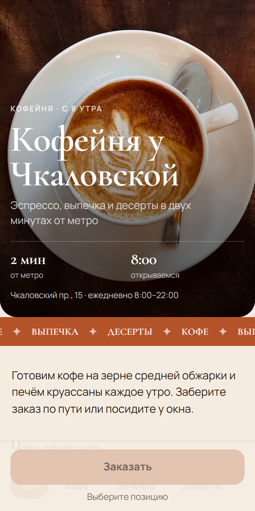
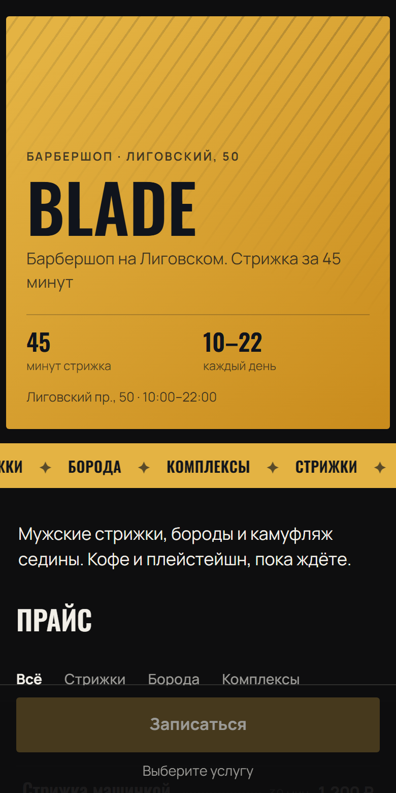
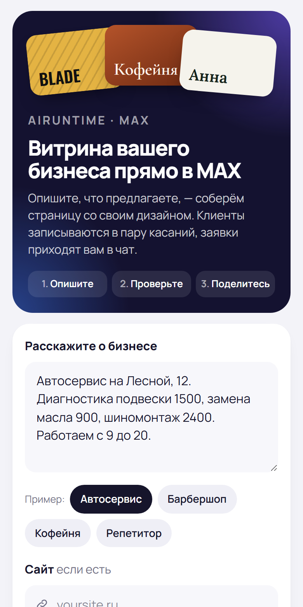
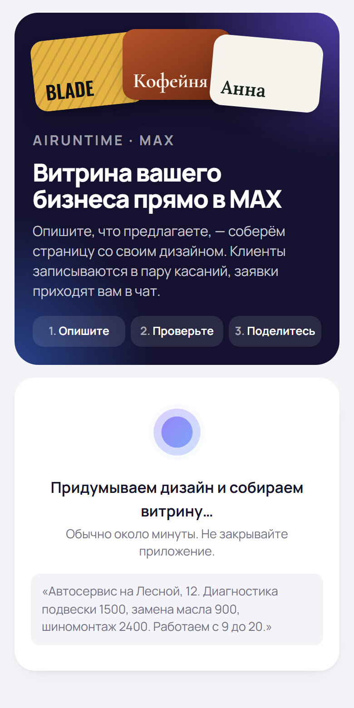
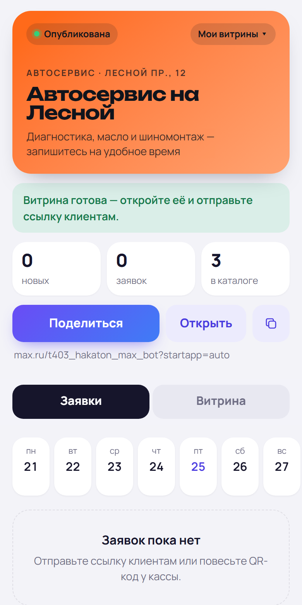
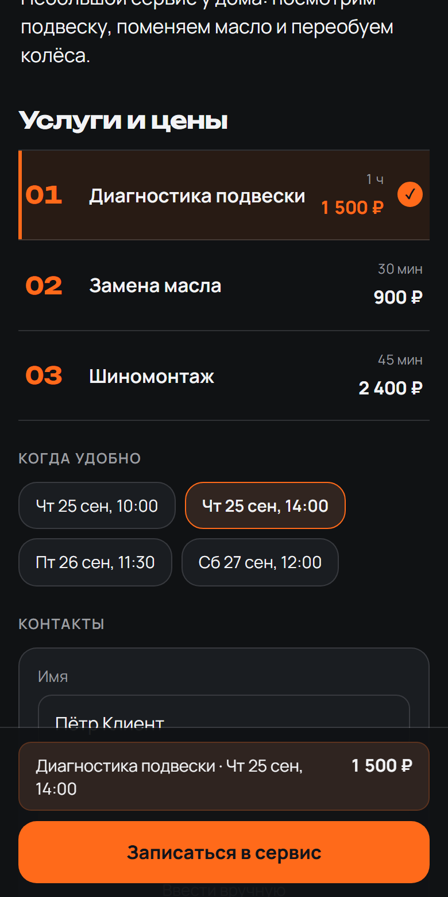
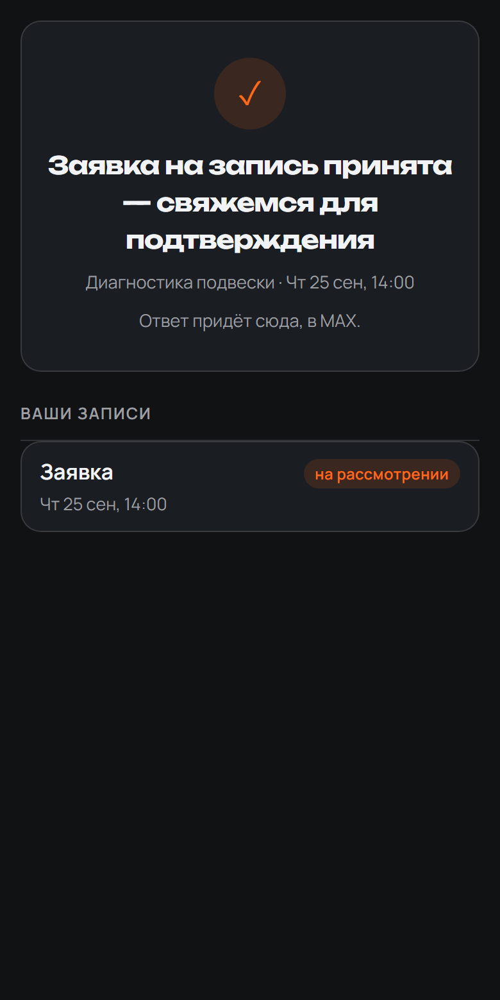

AIRUNTIME
×
 max
max
Трек «Эффективный бизнес»
AIRuntime
Витрина с онлайн-записью и заказами в MAX из одного сообщения — со своим дизайном, без разработчика и без ожидания.
Хакатон MAX · 2026
02
https://max.ru/t403_hakaton_max_bothttps://airuntime.ru/maxmax.ru/t403_hakaton_max_bot?startapp=<slug>github.com/airuntime-ru/airuntime-maxeadc752d7bfc2ec65e96972c4c60e3be6547a8abmain · короткий eadc752/api/v1/max/* обслуживают только мини-приложение
Все компоненты одной командой: docker compose up --build
MAX_BOT_TOKEN = в PDF для жюри
MAX_BOT_USERNAME = t403_hakaton_max_bot · MAX_WEBHOOK_SECRET — любая строка
OPENAI_API_KEY = по запросу; без ключа сервис собирается шаблоном
Остальное — .env.example, пункты README по заданию — раздел «Для проверки»
max.ru/t403_hakaton_max_bot, нажать «Начать», затем «Открыть AIRuntime»Витрина с онлайн-записью и заказами в MAX из одного сообщения — со своим дизайном, без разработчика и без ожидания.



Предприниматель описывает бизнес одним сообщением — и получает в MAX витрину со своим дизайном, где клиенты записываются и заказывают, а заявки приходят ему в чат.
Как читать: один слайд — один критерий оценки; пронумерованные блоки на слайде идут по пунктам этого критерия в порядке задания.
Владельцы микробизнеса услуг с записью на время: 1–5 человек, без сайта и CRM, запись — в личных сообщениях. Пилотные ниши — автосервис, барбершоп, мастер маникюра. Не в фокусе: сети и франшизы — там решает головной офис.
Владелец микросервиса, когда клиенты пишут в любое время, хочет принимать записи без ручного согласования каждой, но онлайн-запись требует платного сервиса с настройкой или разработки, поэтому ведёт запись вручную и теряет заявки.
| Личные сообщения | Сервис записи / CRM | Сайт или бот на заказ | AIRuntime в MAX | |
|---|---|---|---|---|
| Запуск | уже есть | регистрация и настройка | подрядчик, недели | одно сообщение |
| Внешний вид | — | типовой шаблон | свой, но дорого | свой дизайн сразу |
| Где клиент | в переписке | на стороннем сайте | на сайте или в боте | внутри MAX, по ссылке или QR |
| Заявка ночью | ждёт до утра | принимается | принимается | принимается и сразу в чат |
Мини-приложение MAX открывается только на телефоне, поэтому всё сделано mobile-first и проверено от 360 px. Ниже — реальные экраны основного сценария на демо-данных: «Автосервис на Лесной» и клиенты вымышлены.





На экранах ровно основной сценарий: описание → витрина → запись → заявка → ответ. Ничего постороннего на пути нет.
Готовые примеры описаний; время появляется после выбора услуги; над кнопкой видно, что именно бронируется.
Одна главная кнопка на экране, закреплена снизу. У владельца — две вкладки: «Заявки» и «Витрина».
Скелетоны и индикатор сборки; «Витрина готова», «Заявка принята»; ошибка — понятный текст и «Повторить».
Клиенту — два касания: имя из профиля, телефон одной кнопкой. Каждое сообщение бота открывает нужный экран.
Задание называет ценностью взаимодействие с клиентами — оформление заказа, запись на услугу, бронирование непосредственно в MAX. AIRuntime делает именно запись и заказ, целиком внутри MAX.
Правка словами, «Поделиться», скрыть и удалить — части того же цикла, а не отдельные модули.
Гипотеза пилота: если владелец принимает записи через витрину в MAX, доля заявок, дошедших до подтверждения, вырастет, а время на переписку сократится. Успех — владелец не возвращается к ручной записи, и хотя бы одна заявка вне рабочих часов подтверждена.
Регионы: Санкт-Петербург → Ленинградская область → другие регионы через центры «Мой бизнес»; организации — сети барбершопов, автосервисов, студий.
Три типа сервиса уже работают: запись на время, заказ с корзиной, заявка. Новая ниша — новое описание, а не новая разработка.
Не в MVP, следующие типы:
Пилот: нед. 0 — отбор и базовая линия, 1–3 — работа, 4 — решение. Следующий шаг — только при выполненном критерии успеха (слайд 06).
«Начать» в боте, затем «Открыть AIRuntime»
чат с ботомОписать бизнес одним сообщением
мини-приложение«Собрать витрину» → обложка, ссылка, «Поделиться»
мини-приложениеКлиент открывает ссылку или QR
MAX, второй аккаунтВыбрать услугу и время, «Записаться»
мини-приложениеВладельцу — «Новая заявка» с кнопкой
чат с ботом«Принять» → клиенту «Запись подтверждена»
чат клиента| Функция | Где в сценарии | Автотест |
|---|---|---|
| Витрина из описания, сайта и файлов | шаги 2–3 | ✓ |
| Запись с выбором времени | шаг 5 | ✓ |
| Заказ с корзиной (включает владелец) | шаг 5 | ✓ |
| Уведомления владельцу и клиенту | шаги 6–7 | ✓ |
| Правка словами, скрыть, удалить | вкладка «Витрина» | ✓ |
| Телефон из аккаунта MAX (проверка подписи) | шаг 5 | ✓ |
Не применимо: собственного API нет. Эндпоинты /api/v1/max/* обслуживают только мини-приложение.
Проверить сейчас:max.ru/t403_hakaton_max_bot
87 автотестов — tests/test_max_platform.py
initDataopen_appКаждый переход — одно действие владельца, у клиента — сообщение в MAX.
Не применимо: собственного API нет. Входящие данные MAX проверяются на границе: подпись initData и контакта, секрет вебхука.
requestContact()телефон клиента одной кнопкойshareMaxContent()«Поделиться» витриной в чаты MAXopen_app + payloadсообщение бота открывает нужный экран?startapp=slugссылка и QR сразу в витринуBackButtonродная кнопка «Назад», подтверждение закрытияHapticFeedbackотклик на ключевые действия| Действие | Реакция |
|---|---|
| Описание короче 12 символов | кнопка неактивна, сервер тоже отклоняет — пустая витрина не создаётся |
| Запись без услуги, времени или имени | кнопка недоступна, под ней — что осталось выбрать |
| Заявка на услугу, которой нет в витрине | отказ сервера, заявка не создаётся |
| Чужие или просроченные параметры запуска | доступ закрыт, данные не отдаются |
| Модель ответила мусором или не ответила | до трёх попыток, затем шаблон из описания |
Один бэкенд (FastAPI + PostgreSQL), один бот, одно мини-приложение на все витрины. Без микросервисов и очередей там, где они пока не нужны.
schema.pyконтракт витрины и его проверка
generator.pyописание → витрина
storefronts.pyвитрины и владельцы
init_data.pyпроверка подписи MAX
client.py · bot.pyBot API и уведомления
Витрина — данные, а не код: модель заполняет схему и выбирает дизайн из закрытого словаря. Новая витрина не требует деплоя, кривое поле обрезает валидация.
Токены и ключи — только в окружении; .env.example без значений. Рабочий токен для жюри подставляется в PDF при печати и в репозиторий не попадает.
requirements.txt + полное дерево в requirements.lock, package-lock.json. Сборка воспроизводима из коммита.
Личность — только из подписанного initData (HMAC по токену бота, срок жизни — час). Владелец видит только свои витрины и заявки; идентификатор пользователя из тела запроса не принимается.
Commit hash — на слайде 1. README, презентация и экраны собраны из этого коммита; экраны переснимаются скриптом из репозитория.
Все компоненты — одной командой docker compose up --build. Сборка с нуля — около 4 минут по замеру, лимит задания — 5.
README закрывает 15 пунктов задания по порядку; переменные — в .env.example с пояснениями; порты, зависимости и интеграции — отдельными пунктами.
Таблица «Ручная проверка» в README: 8 шагов, у каждого — ожидаемый результат. Автотесты гоняются одной командой, в том числе без Docker на SQLite.
Использованные источники
Бот и мини-приложение работают прямо сейчас. Опишите бизнес одним сообщением — у клиентов будет витрина со своим дизайном и записью, а у вас заявки в чате.